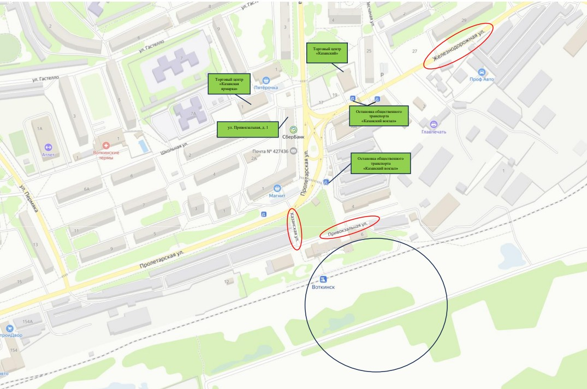

Маршрут начинается у железнодорожной станции — главного объекта Привокзального района. Именно здесь формировалась транспортная инфраструктура города.
Короткая улица длиной около 159 метров проходит рядом с железнодорожными постройками станции.
Улица соединяет Привокзальную и Пролетарскую. Её длина составляет всего около 55 метров.
Перекрёсток улиц Пролетарская, Зверева и Железнодорожная. Жители города считают это место центром района.
Одна из самых длинных и извилистых улиц района. Здесь расположены торговые и административные здания.
Самая длинная улица маршрута. Здесь находится памятник первой железной дороге широкой колеи в Удмуртии.
Финальная точка маршрута. Короткая улица рядом с Преображенской церковью.
